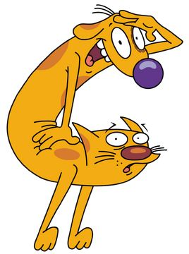

Every paw deserves a place to belong
Durban Paws Rescue finds loving homes for abandoned and stray dogs and cats across eThekwini.
Adopt, Foster, or VolunteerWho We Are
Founded in 2018, Durban Paws Rescue is a volunteer-run non-profit animal rescue working to reduce the number of stray and abandoned animals in and around Durban. Through foster-based rescue, sterilisation drives, and responsible rehoming, we give vulnerable animals a second chance at a safe, loving home.
What We Do
-
Rescue & Rehabilitation
We take in injured, sick, and abandoned animals and provide veterinary care and foster support.
See how we help -
Adoption
We carefully match rehabilitated animals with screened, loving forever homes.
Adopt a dog or cat -
Sterilisation Drives
We run regular community sterilisation drives to reduce animal overpopulation at its source.
Find the next drive
Want to help?
Whether you can adopt, foster, volunteer, or sponsor, there is a place for you at Durban Paws Rescue.
Get in Touch